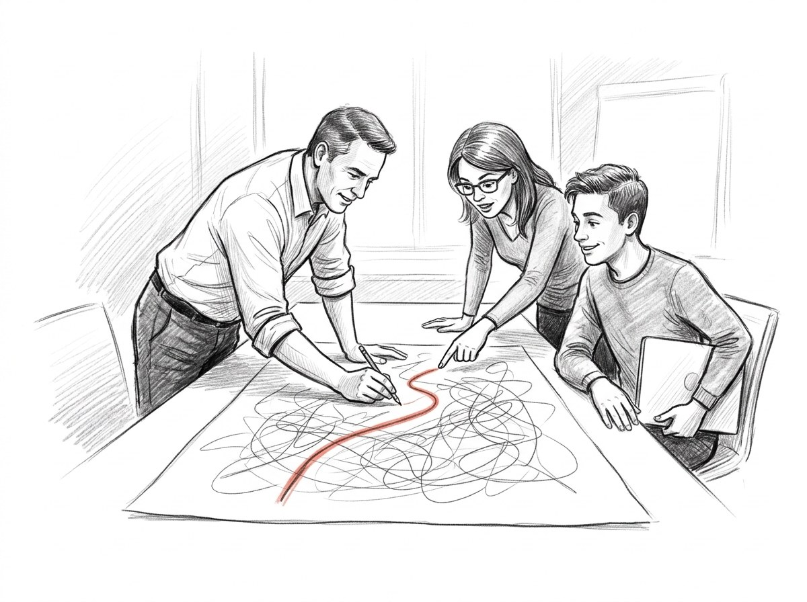

Beratung für KI-Transformation in Medien, Marketing und Werbung. Man holt uns, wenn aus einem Verkaufsgeschäft ein Produktgeschäft werden soll und die Richtung davon abhängt, was technisch geht und sich rechnet.

Pilotprojekte laufen, in der Erfolgsrechnung taucht davon wenig auf. Woran das liegt und welche drei Fragen zusammen zu klären sind.
Zur Leistung ThemaRetail Media aufbauen, agentic buchbar werden, eigene Daten in Werbung aktivieren.
Zur LeistungVon der ersten Hypothese bis zur boardreifen Empfehlung.
Verantwortung auf Zeit: Strukturen aufbauen, Teams befähigen, Ergebnisse liefern.
Praxisnahe Befähigung für Teams und Führungskräfte.
In einer Allianz von vier Medienhäusern ist er der Externe, dem alle vertrauen.Silvano Oeschger, ehem. CEO OneLog AG
KI verkürzt die Zeit, bis ein Junior Output liefert, kaum aber die, bis er Urteilsfähigkeit hat.
Retail Media überschreitet dieses Jahr 200 Milliarden Dollar und zieht an der Fernsehwerbung vorbei.
78 Prozent der Wissensarbeiter bringen eigene KI-Werkzeuge mit. Wem gehört das Wissen?
Kein Pitch, kein Verkaufsgespräch – wir schauen gemeinsam, ob und wie wir helfen können.